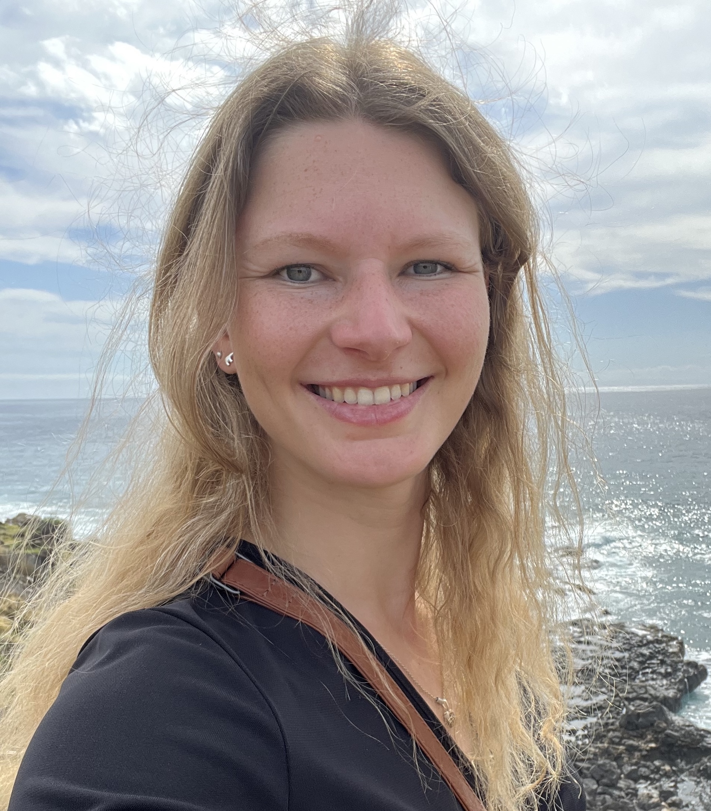

Ane Liv Berthelsen
PhD
About me
Hi, I’m Ane Liv Berthelsen [she/her], a marine biologist working in the fields of molecular and behavioral ecology. Here you’ll find my current research, publications and illustrations.
I hold a PhD in molecular and computational biology from the Evolutionary Population Genetics group, the Hoffman lab, at Bielefeld University, Germany. My research explored density from the concept of how individuals perceive it to its effects on fitness traits, transcriptomic profiles, predation risk and a broad range of phenotypic traits of Antarctic fur seals (Arctocephalus gazella). Thus, I employed a broad range of computational frameworks from bioinformatic pipelines to Bayesian hierarchical modelling.
I am currently wrapping up projects from my PhD investigating the drivers behind phenotypic trait variation in Antarctic fur seals and exploring a pausible link between plasticity and fitness.
I am open for opportunities in Copenhagen from January 2027.
Education
2022-2026
PhD in molecular ecology | Bielefeld University
Defended 12.06.2026 (Magna cum laude)
PhD Thesis: “Effects of density on Antarctic fur seals”
2021-2022
Visiting early career researcher | Bielefeld University
Performed DNA extractions & PCR • Developed PhD project with Prof. Dr. Joseph I. Hoffman
2018-2020
MSc in biodiversity, ecology and evolution - IMABEE double degree | Aarhus University & Göttingen University
MSc Thesis: “The effect of anthropogenic disturbances on local wildlife: a comparative study of German wildcat populations”
Exchange semester: “Biodiversity and Ecosystem Management” | Camerino University
2015-2018
BSc in Biology | Aarhus University
BSc Thesis: “Plasticity of temperature resistance in Stegodyphus dumicola”
Non-academic employment
2026
Science Educator | Seasonal employment, Svanegrund National Park
Guide on RIB in Denmarks largest nature park • Seafarers Certification
2022-2024
Ecology writer | Freelance employment, The Pond Informer
Pub-science • North American fresh & saltwater fish species descriptions
2021
Science Educator | Seasonal employment, The Limfjord Museum
Speaker & public dissections • Snorkel instructor • Sailing small RIB
2016-2021
Science Educator | Student employment, The Kattegatcentret
Speaker & public dissections • Animal caretaking & training • Pioneered summer camp concept
2015-2016
Math tutor | Student employment, MentorDanmark
Private teacher • Age 7 to 17 • Children with special needs
2013-2015
Amusement park employee | Seasonal employment, Djurs Sommerland A/S
Customer service • Food production • Fire response training
2011-2019
Track and field coach | Student employment, Randers Freja Atletik og Motion
Coaching age 6 to 12 • Planning training programs • Sports Coach Certification
Fieldwork
2026
Surveying and tagging Galapagos Sea Lions | Caamaño, Galapagos, Ecuador
Conducted daily ‘resight’ rounds, performed behavioural tests and observed natural behavioural of Galapagos sea lions. Deployed TDRs on adult females to explore feeding behaviour. Captured pups and yearlings from which biometric and hair samples were collected.
2023
Bird Ringing Camp | Durankulak, Bulgaria
Participated in mist-netting, morphological data collection, and bird ringing.
2023
Surveying and tagging Galapagos Sea Lions | Caamaño, Galapagos, Ecuador
Conducted daily ‘resight’ rounds, performed behavioural tests and observed natural behavioural of Galapagos sea lions. Captured pups and yearlings from which biometric and hair samples were collected.
2020
Camera trapping European Wildcat | Hessen, Germany
Set up and managed trail cameras to monitor the local European wildcat population.
Invited talks
2026
Teaching YOLO to count seals: from images to ecological data
Workshop “Evolving AI Applications in Marine Mammal Science: From Computer Vision to Generative and Agentic AI” at the 26th Biennial Conference on the Biology of Marine Mammals | San Juan, Puerto Rico
2024
A plastic carol: laboratory sustainability and the reusability of microtiter plates
Research and Technology Centre (FTZ), Coastal Ecology | Büsum, Germany
Presentations & Seminars
Note: Conference names in bold
2026
Colony matters: density shapes predator access in Antarctic fur seal (Arctocephalus gazella) breeding colonies
ICYMARE, Bremen University, Germany
2025
What drives variation in phenotypic traits? A variance decomposition study
NC3 Retreat, Bielefeld University, Germany
2025
Mum Power: Insights into the role of female Antarctic fur seals in mitigating predation risk
European Cetacean Society Conference (ECS), Ponta Delgada, Azores
2024
Sustainability in the lab: reusability of 96 well plates for microsatellite genotyping
ICYMARE, Bremen University, Germany
2024
Remote observation of an Antarctic fur seal (Arctocephalus gazella) colony
NC3 Conference, Münster University, Germany
2024
Sustainability in the lab: reusability of 96 well plates for microsatellites
Animal Behavior Seminar, Bielefeld University, Germany
2023
Decomposition of trait variability in a decreasing marine mammal population
ICYMARE, Oldenburg University, Germany
2022
Project idea: Trait decomposition in Antarctic fur seals
Animal Behavior Seminar, Bielefeld University, Germany
2022
Density assessment and the effect of anthropogenic disturbance on German wildcats
Animal Behavior Seminar, Bielefeld University, Germany
Workshops
Note: Invited calls in bold
2026
From Image to Analysis: A practical workshop on automated wildlife detections
ICYMARE, Bremen University, Germany
2026
Equity, Diversity and Inclusivity in practice: addressing everyday issues in academia
Science: To be determined, German Centre for Integrative Biodiversity Research (iDiv), Leipzig, Germany
Poster Presentations
2026
From morphology to microbiomes: trait-dependent variance decomposition in a wild marine mammal
26th Biennial Conference on the Biology of Marine Mammals, San Juan, Puerto Rico
2024
What drives variation? Variance decomposition of phenotypic traits in Antarctic fur seals
25th Biennial Conference on the Biology of Marine Mammals, Perth, Western Australia
2024
Nature, nurture or somewhere in between? What shapes phenotypic traits of Antarctic fur seal pups
Conservation Genomics Paris, Muséum National d’Histoire Naturelle, Paris, France
2023
Growth curves of Antarctic fur seal pups from birth to weaning
Behaviour 2023, Bielefeld University, Germany
2019
How different combinations of stress and disturbance affect the facilitation process
38th Meeting Eastern Alpine and Dinaric Society for Vegetation Ecology, Colfiorito di Foligno, Italy
Research visits
2024, 2026
The Fabry Lab, Friedrich-Alexander-Universität Erlangen-Nürnberg, Erlangen, Germany
Collaborative research visits focusing on automated image analysis (YOLO).
2021
Department for Wildlife Disease, Leibniz Institute for Zoo and Wildlife Research (IZW), Berlin, Germany
Learning how to identify white blood cells and parasites in haematological smears
Teaching experience
2024-2025
Marine Conservation | Bachelor course, Bielefeld University
Prepared and gave lectures on the topic ‘Marine Conservation’ in the general course ‘Conservation Biology’.
2016-2021
Basic Biology | ‘Zzzov med hajerne’, The Kattegatcentret
Prepared and gave weekly talks about shark ecology and evolution, harbour seal ecology and behaviour, biodiversity in the Danish oceans and squid morphology and behaviour (coupled with a public dissection).
Student supervision
2023
Laboratory intern | Bielefeld University
Trained and instructed a laboratory intern in high-throughput DNA extractions, gel electrophoresis, and PCR protocols.
Other academic activities
Conference co-organiser and Scientific committee member:
2023
Behaviour 2023 | 14th to 20th August, Bielefeld University
Symposium co-organiser:
2023
Causes and consequences of individualization in behavioural ecology | 14th to 20th August, Behaviour 2023
Seminar co-organiser:
2023-2024
Animal behaviour seminar | Bielefeld University
Community contribution:
2024-2025
“Equity, diversity and inclusivity in the workplace” workgroup | Bielefeld University
Society membership:
2024-2026
Society for Marine Mammalogy
2023-2026
Society for open, reliable, and transparent ecology and evolutionary biology
Grants, Stipends and Prizes
Total funding secured: € 22,982
2026
Equal Opportunities Commissions Stipend (€ 4,950) | Bielefeld University
Equal Opportunities Commissions Travel Grant (€ 400)
2024
The Viet-Jacobsen Fund (€ 1,340)
The Friedrich W. Franks Fund (€ 1,340)
2023
The William Demant Fund (€ 1,400)
The Viet-Jacobsen Fund (€ 1,340)
The Augustinus Fund (€ 533)
2022
Career Bridge Master-Doctorate Stipend (€ 6,000) | Bielefeld University
2019
ERASMUS Exchange Stipends (€ 3,360 + € 979)
2018
Youth Trophy (€ 670)
2011
Head of class ’11: Science Prize (€ 670)
Skills, Certifications & Languages
Computational skills
- Statistics & modeling:
- R (Bayesian hierarchical modeling,
brms) - Transcriptomics (DGE using
limma/voom) - Automated computer vision workflows (YOLO)
- R (Bayesian hierarchical modeling,
- Workflows & clusters:
- Git/GitHub
- Reproducible research (Quarto/RMarkdown)
- Bash HPC environments
Certifications & Languages
- Certifications:
- Seafarers Certificate (Fit for work at sea, until 2028)
- PADI Advanced Open Water Divers certificate
- Driver’s License (B & A2)
- Languages:
- Danish & English: Native / Fluent
- German: Intermediate
- Spanish & Italian: Beginner